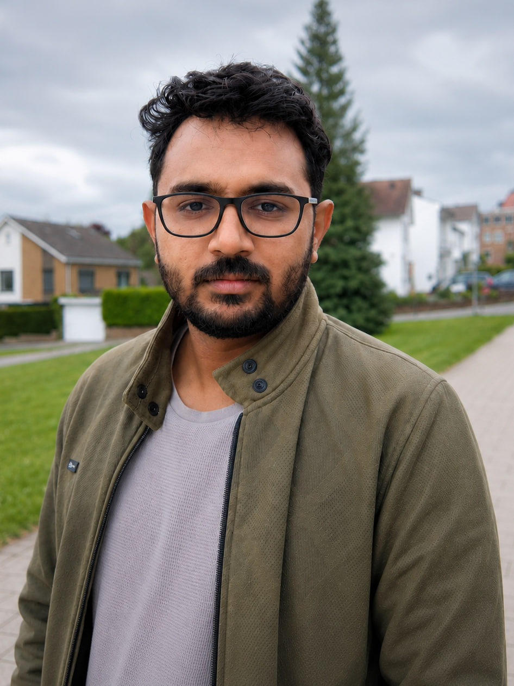

Deep Ocean Transport
Tracing how pollutants such as PCBs move between surface waters and the deep ocean.
I'm Vikas Kumar Meena, a Ph.D. researcher studying how persistent pollutants such as PCBs move between the atmosphere, surface ocean, and deep ocean.

Tracing how pollutants such as PCBs move between surface waters and the deep ocean.
Using global environmental and ocean models to examine pollutant pathways and long-range transport.
Monitoring mercury and atmospheric conditions to connect research with observations.
Research, practical tools, and presentations shaped by a curiosity about environmental systems.